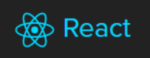
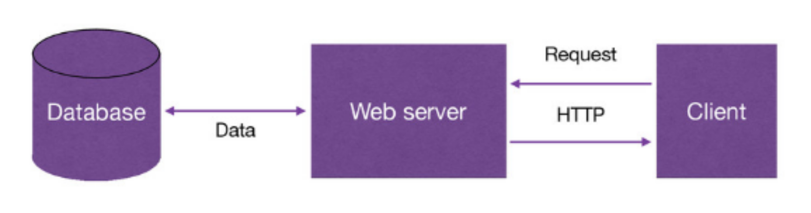
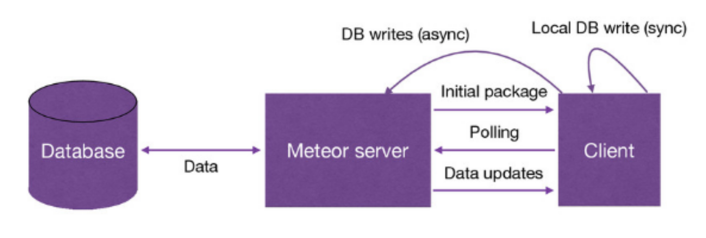
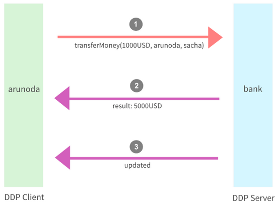
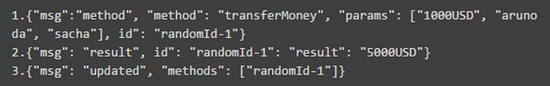

How to start a web application
- install a database
- configure a web server
- choose a server side language / framework
- choose JavaScript as the client side language
How to start it with Meteor
A full-stack JavaScript platform for developing modern web and mobile applications.
The fastest way to build JavaScript Apps
https://meteor.com
A stack of technologies

and more...
Traditional web applications

Meteor web applications

Seven principles of Meteor
- One language
- Database Everywhere
- Data on the Wire
- Full Stack Reactivity
- Latency Compensation
- Embrace the Ecosystem
- Simplicity Equals Productivity
One language
- write your entire app in pure JavaScript/ECMA2015 in all environments: server、browser、mobile
- code runs on the client, inside a web browser or Cordova mobile app
- code runs on the server, inside a Node.js container
Database Everywhere
- on the server (MongoDB)
- on the client/in memory (MiniMongo)
Data on the Wire
- no HTML rendered on the server
- json sent to the browser
- the browser renders templates
Full Stack Reactivity
- change data & everything updates automatically
- changes are broadcasted to all clients
Latency Compensation
- all data operations take place in memory immediately first (MiniMongo)
- callback to server is asynchronous
- what happens if the server rejects their request or executes it differently ?
- the client is patched up with what actually happened
Embrace the Ecosystem
- open source in GitHub
- bringing the best parts of the extremely active JavaScript community to you
- Atmosphere & npm
Simplicity Equals Productivity
- clean and simple APIs
- environment configuration
Distributed Data Protocol
- It is a protocol based on JSON
- Meteor uses it to communicate between client and server
Introduction to DDP
Handling Remote Procedure Calls


Development experienc
- only need to install Meteor, you have all the environment.
- meteor build tool automatically detects any relevant file changes & recompiles the changes, restarting client or server
Pain point
- meteor upgrade brings a lot of problems
- delay of recompiles or refresh
- meteor mobile
If you decide to learn meteor,
make sure you are true to it.